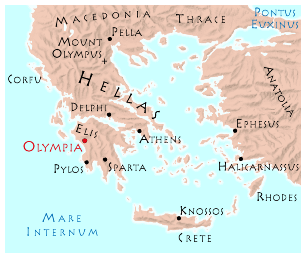

 Choosing
the site
Herakles chose
for his celebratory games sacred Olympia,
one of the oldest religious sites in Hellas.
There stands a wooded hill upon which Zeus,
the king of the gods, defeated his father, Kronos, in a wrestling match
to determine which god would reign supreme over the earth. Herakles selected
a grove at the foot of that hill to be the Altis,
the most sacred spot in a sacred site.
Reviving
the Olympic Games
The games founded
by Herakles ended at some unknown time in the distant past.
Then, 622 years ago, the Oracle
at Delphi told King Iphitos of Elis that he could end the civil war
and plague ravaging Hellas at that time by reviving the Olympic Games.
King Iphitos arranged a truce during which he invited all Hellene city-states
to gather in harmony for an athletic competition at Olympia. This marked
the beginning of the revived Olympic Games, held every four years since.
The
current Olympics
The current Games
were first held 524 years
ago. At first and for 13 Olympiads
afterward, the Games consisted of a single event, a 1-stade-long
footrace known as the Stade. The first winner of that race and
the first modern Olympic champion was Koroibos,
a cook from Elis.
|